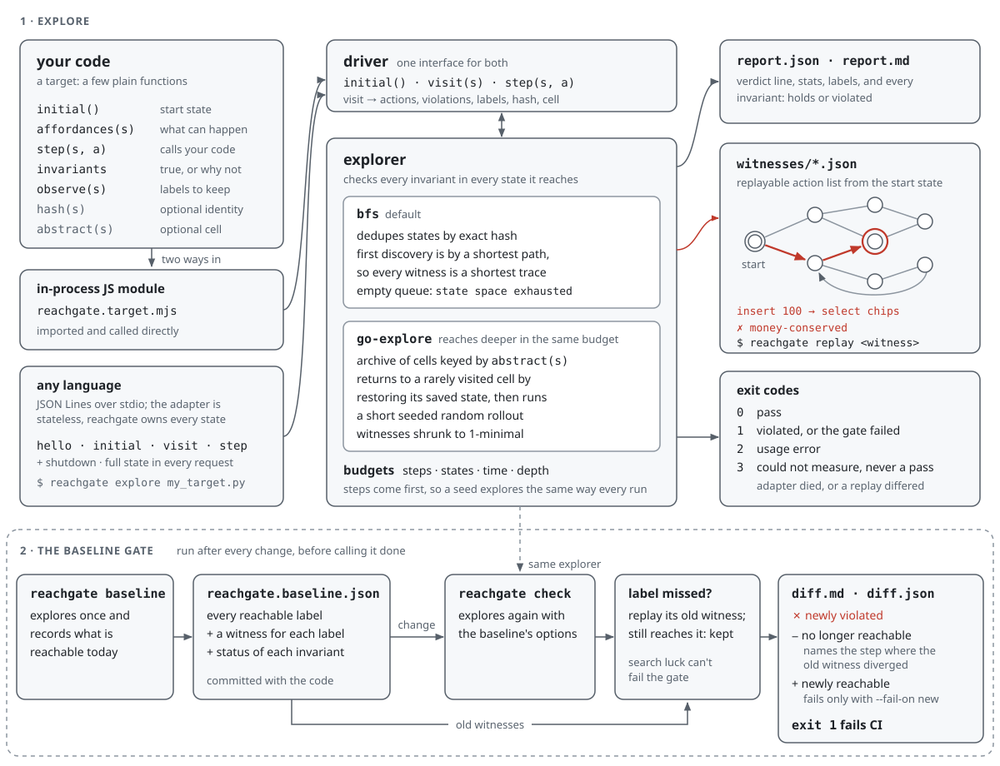

reachgate
Explore every reachable state of your real code, check invariants in each one, and get the shortest
replayable trace to every violation. Then gate changes against a behaviour baseline: reachgate check
explains what became reachable or unreachable before you call a change done.
How it works

Witnesses are plain JSON: replay one with reachgate replay.